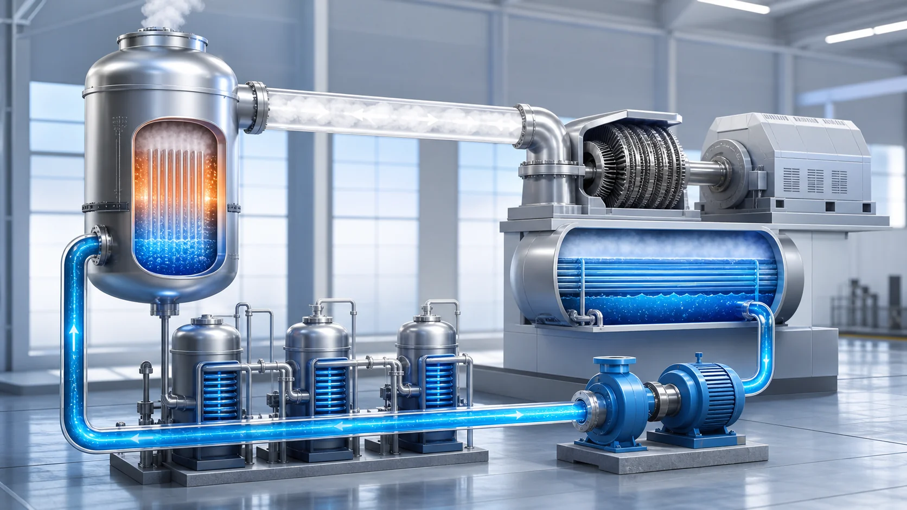
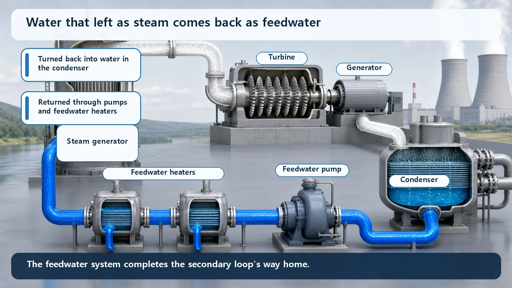
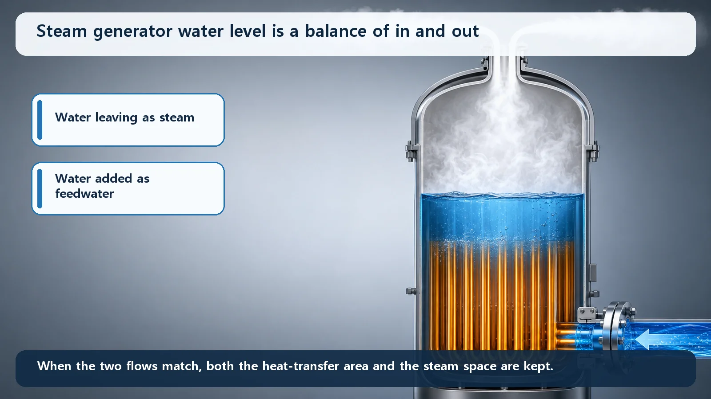

Reactor Types & Plant Systems · 189
The Quiet Hand That Refills Whatever Leaves as Steam — What Does the Feedwater System Do?
Like the hand that keeps topping up a stockpot that steams all day, the feedwater system puts back exactly the water that leaves as steam.

The feedwater system takes the water that has spun the turbine and condensed, pumps it up to high pressure, preheats it and sends it back to the steam generators. Its central job is to add exactly as much water as leaves as steam, so the steam generator water level stays steady.
Picture a big cafeteria kitchen. In one corner, an enormous stockpot bubbles all day, steam curling from under the lid, yet it never runs dry. Why? Someone keeps quietly topping it up with exactly as much water as escapes as steam. Diners barely notice that hand, but the moment it stops, the pot boils down and the kitchen grinds to a halt.
A nuclear power plant has just such an "invisible hand." The star that makes electricity is the steam spinning the turbine, but for steam to keep coming, someone must keep putting back as much water as leaves. That quiet helper is today's subject: the feedwater system.
The feedwater system in one sentence
The feedwater system takes the water that has spun the turbine and cooled back into liquid, pumps it up, preheats it and sends it back to the steam generators, keeping them supplied with water. As the name says, it is the system that "feeds" water.
The steam generator, a large heat-exchange device that boils water into steam, is our stockpot. Since it keeps pouring out steam, someone has to add back the same amount of water.
It's actually the same water going round and round
Here's an interesting fact: the water the feedwater system adds isn't fresh water drawn from somewhere new. It's the very water that just left as steam, coming back after a lap.
On the electricity-making side of a plant (called the secondary system), water runs round a closed loop. Let's follow it. (1) In the steam generator, water boils into steam. (2) The steam rushes to the turbine and spins its blades hard to make electricity. (3) Its work done, the spent steam enters a device called the condenser, where cold cooling water takes away its heat and it turns back into water. Steam cooled back into water this way is called condensate. (4) The feedwater system takes over that water and sends it back to the steam generator. There it boils again, goes to the turbine again... the same water circles this loop endlessly.
So in this big loop, the feedwater system handles the "way home." It doesn't throw water out and pour in new water; it's a thrifty housekeeper that recovers the water that left and puts it back in place. (Only the small amount lost through ordinary leakage is topped up with new water.)

Why push it in hard, and why bother heating it first?
Just putting the water back sounds simple, but there are two tricks to it.
First, it has to be pushed in hard. The inside of a steam generator is at very high pressure. To get water into a high-pressure room, you have to push harder than the pressure inside, right? The feedwater pump provides that push. It raises the pressure of the returning water above the steam generator's, so the water flows in obediently.
Second, it's warmed up before it goes in. That's the job of the feedwater heaters. They borrow a little of the steam on its way through the turbine and use it to warm the returning cold water. Two benefits. One is efficiency: the water must be heated in the steam generator anyway, and doing part of that ahead of time uses heat more thriftily, raising the plant's efficiency. The other is protecting equipment. Pour ice-cold water into a steaming-hot steam generator, and the sudden temperature difference between hot metal and cold water strains the metal (thermal shock). It's like pouring cold water into a hot glass in winter: it can crack. So the water is warmed first to narrow the temperature gap.
What the feedwater system watches every moment: the water level
Now for the feedwater system's most central mission: keeping the water height, the level, in the steam generator steady.
Back to the stockpot. Add as much water as leaves as steam and the soup level stays put. Add too little and it boils down; too much and it overflows. A steam generator is the same: add exactly as much feedwater as leaves as steam, and the level holds. Put very simply:
Feedwater flowing in ≈ steam flowing out
Why does the level matter so much? If it drops too low, the hot tubes that make the steam are exposed above the water and can't hand over their heat properly. If it rises too high, water droplets can get mixed into the steam and carried to the turbine, which is bad for the turbine. So whenever the plant's output goes up or down, the feedwater system nudges the feedwater flow up and down in real time to hold the level right at its target. Much of running a plant is keeping this balance, moment by moment.

Look-alike terms, sorted out
First, condensate and feedwater. They're the same water at different stages of the trip. Water freshly cooled and collected in the condenser is condensate; that water, sent back through pumps and heaters to the steam generator, is feedwater.
Second, feedwater is not the water that cools the core directly. The water cooling the reactor core (primary coolant) and feedwater (secondary system) are separated by the steam generator; they exchange only heat and never mix; feedwater never touches the core.
Finally, the system described here is the main feedwater, which supplies water continuously during normal operation. Separately, if main feedwater is lost for some reason, a standby system called auxiliary feedwater (emergency feedwater) supplies the steam generators instead. To keep removing the heat that remains for a while after the reactor is shut down (decay heat), the steam generators need water, so a backup for the backup is ready to keep that water path from breaking. Think of it as a substitute player who steps in when main feedwater sits out.
So why does the feedwater system matter?
The feedwater system isn't a showy star. But steam, turbine and core can keep working only because it tirelessly puts the water back on time, at the right pressure, suitably warmed and in exactly the right amount. Just as the kitchen stops when the hand filling the pot stops, when feedwater stops, steam stops and generation stops. That's why plants back up main feedwater with auxiliary feedwater, layer upon layer, so this water path never breaks under any circumstances.
Today's takeaways
- The feedwater system is the secondary-side system that takes the water collected in the condenser after spinning the turbine, raises its pressure with pumps, preheats it and refills the steam generators.
- It's the same water that just left as steam, returning around the closed secondary loop: the loop's "way home."
- The feedwater pump pushes water in at a pressure above the steam generator's; feedwater heaters warm it first to raise efficiency and reduce thermal shock to equipment.
- Its core mission is "fill as much as leaves as steam" to hold the steam generator level steady. Too low and heat removal suffers; too high and droplets can carry over to the turbine.
- Feedwater (secondary side) is separate from the coolant that cools the core (primary side), and if main feedwater is lost, auxiliary feedwater takes over to help remove decay heat.
Unseen as it is, this quiet hand is why the plant's big stockpot never runs dry. Next, we could turn to the substitute that jumps in when this water path really breaks: auxiliary feedwater.